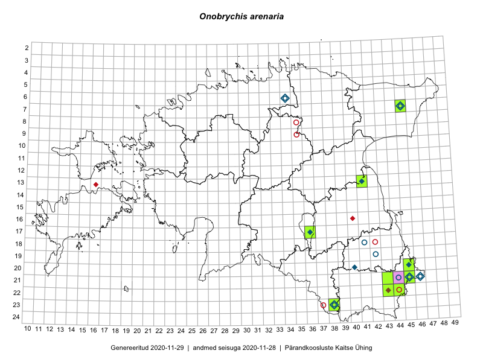

Onobrychis arenaria
Uuendatud: 2016-12-01
Kaardile koondatud taksonid: Onobrychis arenaria (Kit.) DC.

Kaart põhineb 6 kirjel.
Viited andmebaasikirjetele
- Rein Kalamees, Kersti Püssa: 2015-07-15: 20-45: GPS punkt
- Rein Kalamees, Kersti Püssa: 2015-07-15: 20-45: GPS punkt
- Rein Kalamees, Kersti Püssa: 2015-07-15: 20-45: GPS punkt
- Toomas Kukk, Kersti Tambets, Sten Mander, Janika Sammasto, Timo Luhamäe: 2014-07-30: 21-45: ala
- Helle Mäemets, Mare Leis: 2015-06-25: 17-36: ala
- Helle Mäemets, Malle Timm: 2015-08-20: 17-36: GPS punkt